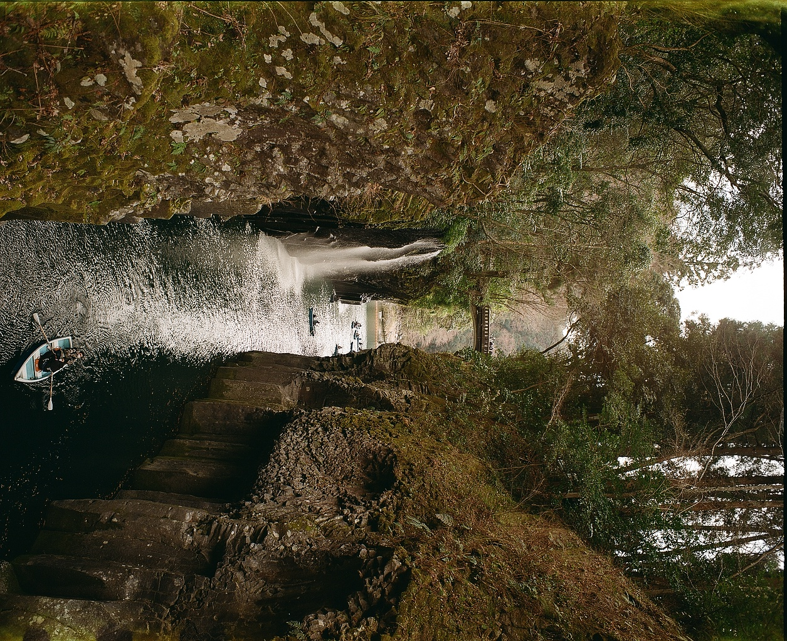

わたくしの撮影記
ホーム
タグ検索
Roll 0018
2025年3月
1枚
Roll 0017
2025年2月
1枚
Roll 0016
2025年2月
1枚

Roll 0014
2024年12月
3枚
Roll 0013
2024年5月
4枚
Roll 0012
2024年11月
4枚
Roll 0010
2024年9月
1枚
Roll 0008
2024年9月
3枚
Roll 0006
2024年7月
1枚
Roll 0005
2024年7月
2枚
Roll 0003
2024年6月
2枚
Roll 0002
2024年4月
3枚
Roll 0001
2024年4月
2枚
Digital Photos
2024年8月
2枚
もっと見る
タグで探す
撮影時期
2025年3月
2025年2月
2025年1月
2024年12月
2024年11月
2024年9月
2024年8月
2024年7月
2024年6月
2024年4月
撮影場所
宮城県
埼玉県
東京都
神奈川県
大阪府
宮崎県
カメラ
Canon IV Sb2
Canon FTb-N
Fujifilm FinePix S5 Pro
Nikon F70D
Nikon D800
Olympus OM-1
Pentax 6×7
レンズ
Canon Serenar 35mm F3.5
Canon Lens 50mm F1.8
Canon FD 50mm F1.4 S.S.C.
Canon NewFD 80-200mm F4
Olympus G.Zuiko 50mm F1.4
Pentax SMC TAKUMAR 6×7/55mm F3.5
Pentax SMC TAKUMAR 6×7/90mm F2.8
AI AF Zoom-Nikkor 28-80mm F3.5-5.6 D
AI AF-S Zoom-Nikkor 28-200mm F3.5-5.6 D
AI AF-S Zoom-Nikkor 80-200mm F2.8 ED
AI AF Nikkor 50mm F1.4
フィルム
Kodak ColorPlus 200
Kodak Gold 200
Kodak UltraMax 400
FUJIFILM 200
FUJIFILM SUPER 400
ILFORD XP2 Super 400
ILFORD ILFOCOLOR 400 PLUS Vintage Tone
Lomography Color Negative 100
写真のスタイル
モノクロ
風景
スナップショット
長時間露光
夜景
動物
↑